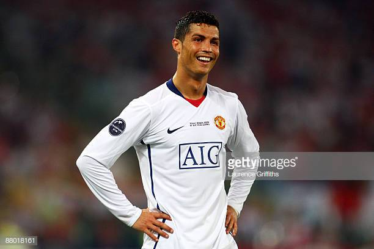

Juventus
Cristiano Ronaldo dos Santos Aveiro GOIH ComM (European Portuguese: [kɾiʃˈtjɐnu ʁoˈnaɫdu]; born 5 February 1985) is a Portuguese professional footballer who plays as a forward for Italian club Juventus and captains the Portugal national team. Often considered the best player in the world and widely regarded as one of the greatest players of all time,[11][12][13] Ronaldo has a record-tying five Ballon d'Or awards,[note 3] the most for a European player, and is the first player to win four European Golden Shoes. He has won 29 trophies in his career, including six league titles, five UEFA Champions Leagues, one UEFA European Championship, and one UEFA Nations League. A prolific goalscorer, Ronaldo holds the records for most goals scored in the UEFA Champions League (126) and the UEFA European Championship (9), as well as those for most assists in the Champions League (44) and the European Championship (6). He has scored over 700 senior career goals for club and country.

Real Madrid
Cristiano Ronaldo dos Santos Aveiro GOIH ComM (European Portuguese: [kɾiʃˈtjɐnu ʁoˈnaɫdu]; born 5 February 1985) is a Portuguese professional footballer who plays as a forward for Italian club Juventus and captains the Portugal national team. Often considered the best player in the world and widely regarded as one of the greatest players of all time,[11][12][13] Ronaldo has a record-tying five Ballon d'Or awards,[note 3] the most for a European player, and is the first player to win four European Golden Shoes. He has won 29 trophies in his career, including six league titles, five UEFA Champions Leagues, one UEFA European Championship, and one UEFA Nations League. A prolific goalscorer, Ronaldo holds the records for most goals scored in the UEFA Champions League (126) and the UEFA European Championship (9), as well as those for most assists in the Champions League (44) and the European Championship (6). He has scored over 700 senior career goals for club and country.

Manchester United
Cristiano Ronaldo dos Santos Aveiro GOIH ComM (European Portuguese: [kɾiʃˈtjɐnu ʁoˈnaɫdu]; born 5 February 1985) is a Portuguese professional footballer who plays as a forward for Italian club Juventus and captains the Portugal national team. Often considered the best player in the world and widely regarded as one of the greatest players of all time,[11][12][13] Ronaldo has a record-tying five Ballon d'Or awards,[note 3] the most for a European player, and is the first player to win four European Golden Shoes. He has won 29 trophies in his career, including six league titles, five UEFA Champions Leagues, one UEFA European Championship, and one UEFA Nations League. A prolific goalscorer, Ronaldo holds the records for most goals scored in the UEFA Champions League (126) and the UEFA European Championship (9), as well as those for most assists in the Champions League (44) and the European Championship (6). He has scored over 700 senior career goals for club and country.